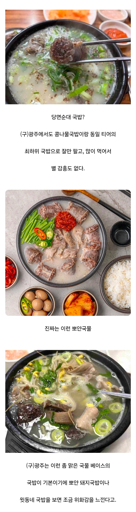

담양이나 창평쪽이 이런 국밥으로 유명하고
광주도 그 영향권이라 국물이 맑음.

담양이나 창평쪽이 이런 국밥으로 유명하고
광주도 그 영향권이라 국물이 맑음.
사골을 안하는구나
살코기를 고아서 먹으면 곰국
뼈를 삶으면 뽀얀 설렁탕
맛의 장단점이 다름
경상도에선 잡뼈+사골 우린걸 곰탕이라고 함
맑은국물은 갈비탕 말고 본적없는듯
설렁탕 단어를 잘 못봄
당순은 그자리에서 뚝배기채 던지고 나가는게맞음
ㄹㅇ
아 창평암뽕국밥 먹고싶다
꼭 보면 시골 촌노무 새끼들이 당면순대 가지고 지랄염병 떠는거보면 같잖음 아주 ㅋㅋㅋㅋ
전국 순대국 90퍼 씹어먹는 약수순대국, 청와옥, 먹거리집등 존나 많은 가게들이 당면 순대 주는데 맛알못 미맹 개드립 시골 한줌단 새끼들만 당면순대 가지고 지랄함 ㅋㅋㅋㅋ
아니 전국 순대국집 70 - 80퍼 이상이 당면순대 들어가는데 꼭 보면 조또 아무도 모르는 지네 시골 동네 순대국 가지고 기준삼음 ㅋㅋㅋㅋ
그렇다고 그딴 시골집들이 막상 가면 존나 맛있는 집도 아님 ㅋㅋㅋㅋ
이럼 또 긁혀서 지네 시골동네 인구 몇십만이니 어쩌구 븅신같은 소리 쳐해댐
광역시도 다 시골이야 븅신 촌노무 새끼들아 ㅋㅋㅋㅋ
왤케 화났냐?
댓글 쓰는 느낌이 라멘 겔 레파토린데? ㅋㅋㅋㅋㅋ 그쪽 애들 화나있는거 디폴트임
ㄴㄴ 90퍼 씹어먹는곳들 당면순대 없으면 더 맛있음
맛알못 아웃
약먹어
내가 싫다는데 뭐이렇게 흥분을 하세요
이제 구 광주구나 ㅋㅋ
업뎃 빠르네
안산 상록수역쪽에 저거 같잖게 흉내내는집 있음.
원래 주인은 잘하다가 팔고 딴가게 차리고 그것도 접었다함. 지금 그 식당 맛있다는 놈들은 혀가 이상한것 같음.
그리고 서울 밖에서 순대국밥 원탑은 병천도, 백암도, 창평도 아니고 김포 북변동 박천순대임.
병천에 제일 유명한 충남집은 지린내 심해서 못먹을 정도고 청화집이나 박순자가 더 나음.
피순대도 당면들어가지 않음?